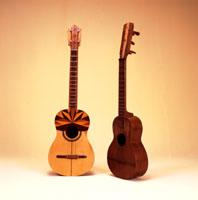
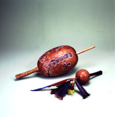

IMPACTO MASIVO
NO SIGNIFICA
EDUCACIÓN MUSICAL
El
Diario de Caracas 10-9-1999
Fotos: Nelson Garrido, Colección Fundef
Hoy concluye el Segundo Encuentro Latinoamericano de Educación Musical en la ciudad de Mérida junto con el Sexto Encuentro Nacional de Educadores Musicales. Desde el pasado domingo 5 hemos asistido a un evento indiscutiblemente exitoso desde el punto de vista de su organización y coordinación, alcance e importancia continental, nivel logrado en la selección de los ponentes de trabajos de investigación, sesiones plenarias, talleres, foros, conciertos, relatos de experencias institucionales y sobre todo la asistencia de 500 participantes e invitados.El contrasentido de un presupuesto gigantesco para lo sinfónico no-nacional mientras no hay quien enseñe cuatro venezolano quedó de manifiesto en un evento para la reflexión.
